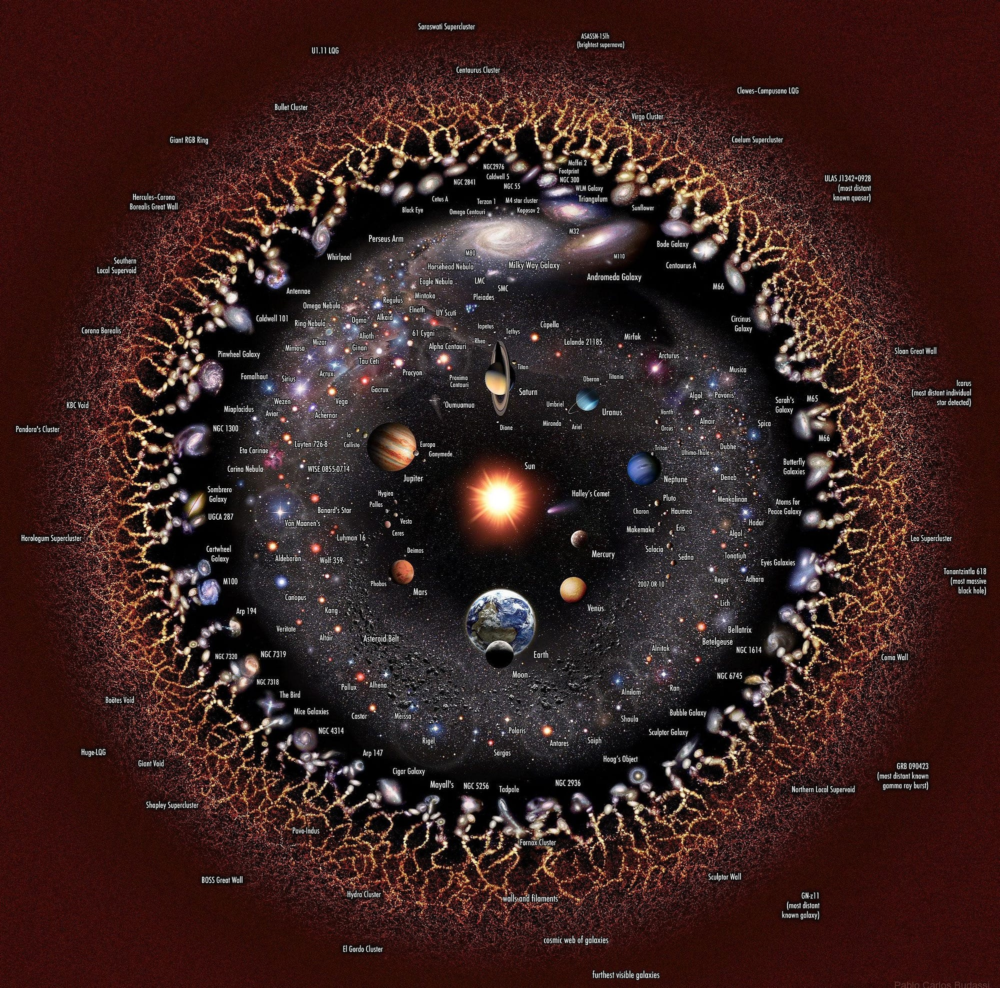

This article’s purpose will be to detail a small art project in the form of a video game that I plan to create (hopefully over the next few weeks). I will detail the physical layout of the scene in the game, many of the technical requirements to achieve my desired effect, and the artistic themes it hopes to explore.
The game will take place in one space, a museum. This museum will be made of a white marble-esque material with a modern, minimalist design. The player will start outside in a courtyard and enter through an arched doorway. Overhead, a sign will simply read “The Museum”.
Inside, the museum’s corridors will wind, split, and eventually reconverge on a single painting.
The painting will have a small plaque next to it that reads as follows:
Unknown
Reality, 13.8*10^9 BCE
Something From Nothing
Please Don't Touch the Art.
In order to make the scene work how I want. I will need to learn the following in a game engine, Unity or Godot.
The focal point of the game is the image, and it’s description plaque. The image represents, obviously, the totality of everything, everything that is real and all that we experience as well as everything we don’t. The artist is listed as ‘unknown’ to reflect the unanswerable nature of metaphysical questions like the nature of a potential God. Crucially, the small warning at the bottom serves as a seemingly standard reminder that would exist in a real museum to discourage patrons from potentially damaging sensitive and valuable art pieces, but in this context it serves as a deeper reminder to the audience that reality is to be received and enjoyed on it’s terms, and attempts to control or distort it to our whims are perverting it’s message and, in a sense, “missing the point” in an artistic sense.